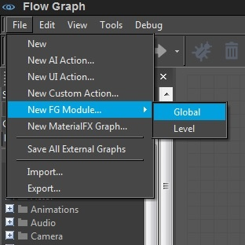
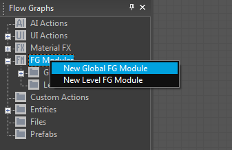
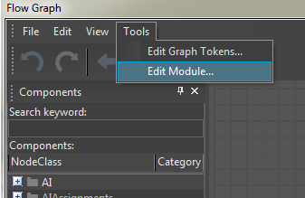
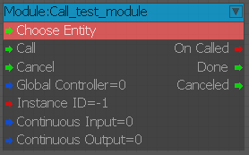
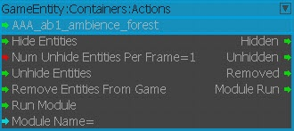
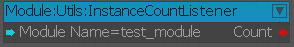
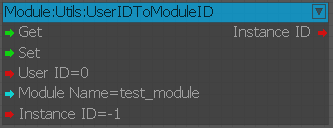
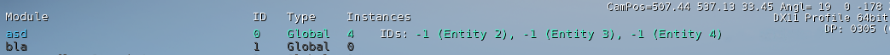

Обзор
Модуль FlowGraph — это способ инкапсулировать узлы в отдельный граф, который затем можно извлечь из других графов во время выполнения.
Создание нового модуля
Используя редактор Flow Graph, вы можете создать новый модуль, выбрав Файл -> Новый модуль FG -> Глобальный/Уровень.

Вы также можете создать новый модуль, щелкнув правой кнопкой мыши запись «Модули» FG.

Существующую логику можно преобразовать в модуль, выбрав и скопировав нужные узлы, а затем щелкнув правой кнопкой мыши для выбора. Вставить со ссылками (Ctrl + Shift + В.) опция в новом модуле.
Типы модулей
Поддерживаются два типа модулей:
- Глобальный: Модули, используемые на нескольких уровнях, следует создавать как глобальные модули.
Сохранено: ../GameSDK/Libs/FlowgraphModules
- Уровень: Модули, используемые только на определенном уровне, должны создаваться как модули уровня.
Сохранено: ../GameSDK/Levels/<папка уровня>/FlowgraphModules
Добавление пользовательских портов ввода/вывода
Пользовательские порты для ввода и вывода можно добавить через Инструменты -> Редактировать модуль когда график модуля открыт в главном представлении:

Доступ к диалоговому окну «Порты модуля» также можно получить, щелкнув правой кнопкой мыши модуль в списке графиков или щелкнув правой кнопкой мыши связанные с ним узлы.
Использование модулей
Модули вызываются из других графов с помощью Вызов узлов. Каждый модуль имеет свой собственный узел вызова с именем Модуль:Call_<Имя модуля>.

Модули могут вызываться независимо с помощью отдельных узлов вызова и из разных графов. Каждый вызов модуля генерирует отдельный Экземпляр который выполняется независимо от предыдущих вызовов.
Идентификаторы экземпляров
Конкретным экземпляром, связанным с узлом вызова, можно управлять с помощью порта «InstanceID». Это полезно для обновления входных данных или прослушивания выходных данных определенного экземпляра.
Когда вы устанавливаете значение как '-1', он создаст новый экземпляр с автоматическим ID. Узел вызова будет выводить данные для этого экземпляра до тех пор, пока он не будет вызван снова.
Последующие триггеры в узле вызова с определенным экземпляром ID будут обновлять входные данные этого экземпляра, а не генерировать новый. Номера экземпляров ID независимы от модуля к модулю.
Запуск модулей на сущностях
Экземпляр модуля может быть связан с объектом, установив его в Choose Entity порт. Объект ID доступен из модуля в узле Start. EntityID порт.
Сущность ID можно использовать для ссылки на один и тот же экземпляр модуля для обновления его входных данных и прослушивания выходных данных. Экземпляр ID следует хранить по адресу -1.
Другой способ запуска модулей на сущностях — использование узла GameEntity:Контейнеры:Действия:

Этот узел запускает модуль для всех сущностей контейнера сущностей, где все экземпляры автоматически будут иметь правильный Entity ID.
С помощью этого метода невозможно передать входные данные.
Опции непрерывного ввода/вывода
Без Continuous Input (по умолчанию), экземпляр модуля будет получать обновленные входные данные только тогда, когда Call порт срабатывает, что активирует все порты начального узла, даже если входные значения не были обновлены.
С Continuous Input вариант, отдельные входы будут передаваться в стартовый узел, как только они будут активированы, что также активирует стартовый узел. Update порт. Если у узла Call нет работающего экземпляра и срабатывает вход, ничего не происходит.
Для Continuous Output, Узел вызова обновит свои выходные порты, как только они будут активированы с обратного узла.
Без Continuous Output Выходы узла вызова активируются только после успешного завершения экземпляра.
Глобальные контроллеры
Узел вызова может быть установлен на Global Controller режим. Это полезно либо для отправки входных данных всем экземплярам модуля одновременно, либо для прослушивания, если какой-либо из экземпляров вызвал выход.
- Если несколько экземпляров запускают выходные данные, внешние выходы глобального узла сработают несколько раз.
-
OnCalledпорт срабатывает с помощью InstanceIDs при создании экземпляра модуля. - В этом режиме узел игнорирует порт InstanceID и EntityID.
- Если узел вызывается, а экземпляра не существует, он создаст новый.
Служебные узлы модуля
Следующие узлы используются в качестве служебных узлов модуля:
- Модуль:Утилиты:InstanceCountListener
- Модуль:Утилиты:UserIDToModuleID
Модуль:Утилиты:InstanceCountListener

На основе имени (или части имени) модуля отображаются запущенные экземпляры модуля.
Модуль:Утилиты:UserIDToModuleID

Этот узел используется для создания реестра идентификаторов экземпляров модуля. Идентификаторы экземпляров модуля могут быть сохранены (Set) вместе с UserID это может быть что угодно, что полезно и логично связать. Эти соединения затем можно восстановить (Get) используя это User ID. Узел не хранит никакой информации сам по себе, все ассоциации должны создаваться и поддерживаться разработчиком.
Отладка модулей
С помощью CVar можно получить обзор активно работающих экземпляров модулей в игре. fg_debugmodules.

- fg_debugmodules 0/1/2:
- 0: информация об отладке отключена.
- 1: показывает список модулей с указанием количества запущенных экземпляров каждого модуля.
- 2: Показывает список модулей с подробной информацией об экземпляре.
- fg_debugmodules_filter "строка фильтра"
- Отфильтруйте список, чтобы отображались только модули, имя которых соответствует «строке фильтра».
Расширенный
Можно вызвать модуль изнутри, а также прослушивать собственные выходные данные модуля внутри его графа. Несмотря на то, что этому есть применение, помните, что простой бесконечный вызов новых экземпляров модуля в конечном итоге приведет к сбою движка.
Сущности также могут запускать несколько экземпляров одного и того же модуля, указав экземпляр ID, отличный от -1. Подробности об идентификаторах экземпляров:
- Модуль запускает набор экземпляров с уникальными идентификаторами (IID), которые связаны с объектом (или с invalid_entityid для отсутствия объекта).
- Если узел вызова имеет указанный вручную экземпляр ID, отличный от '-1', он будет использоваться.
- Первый из тех же конкретных IID, который будет вызван, создаст экземпляр, который, в свою очередь, выведет все узлы вызова с этим IID.
- IID, указанные во время выполнения, могут ссылаться на IID, указанные вручную.
- IID, сгенерированный во время выполнения, не будет конфликтовать с заданным вручную (генератор ID начинается с самого большого руководства ID, найденного до запуска игры).
- IID '-1' генерирует новые экземпляры при каждом вызове, если нет связанной сущности.
- Узел вызова будет хранить выходные данные последнего сгенерированного экземпляра до тех пор, пока он не будет вызван снова.
- Если указана сущность ID, IID будет ссылаться на эту сущность, то есть сущности могут иметь собственный отдельный экземпляр 1,2,3.. того же модуля.
- IID -1 с указанным объектом ID не будет генерировать новый IID ('-1' — это экземпляр ID).